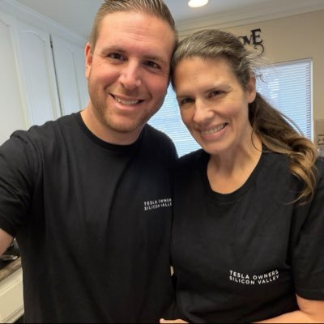

Matt
@ninjamattic · Bay Area, CA
Husband · Father · Pastor · FSD enthusiast · Builder of Churchism
About
I'm Matt, a husband, dad, and pastor at The Pentecostal Church. I'm an FSD enthusiast who drives a 2020 Model Y and rides in a Cybercab, I love Apple gear (the iPhone Duo is my pulpit tool of choice), and I build Churchism, church operations software that runs a congregation's week from one place: serving schedules, people and households, kids check-in, giving, the calendar, Sunday reports, and a Music Stand for the band. Around X I'm also known as the guy who memed for X Money, and the Chargeslinger.
What I'm building
⛪Churchism
Run the week from one place. Serving, people, kids check-in, giving, calendar, Sunday reports & Music Stand. One workspace, one login.
→
📱Churchism for iPhone & iPad
Same login as the web. Download on the App Store.
→
Grok Bots
Tap one to add it to your own Grok Bot.
🎨The Designer
Brand designer for churches, nonprofits & small orgs: logos, brand kits, social posts, app tiles & slides
→
Church
⛪The Pentecostal Church
Come worship with us.
→
Find me
𝕏@ninjamattic
Tesla, FSD, Robotaxi, Apple, and church life
→
⚡Free month of FSD
Buying a Tesla? Use my link for a free month of Full Self-Driving
→
Into
🚗 FSD🤖 Robotaxi & Cybercab📱 Apple🎸 Worship👨👩👧 Family⛳ Golf